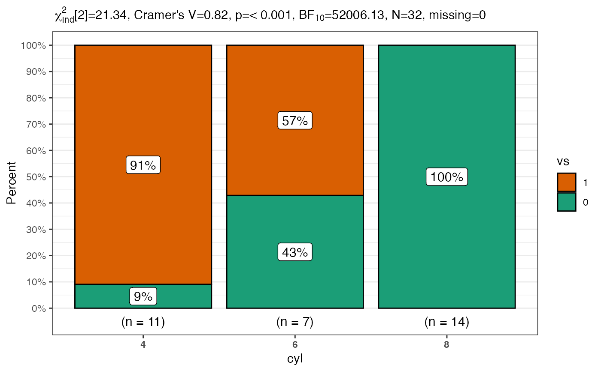
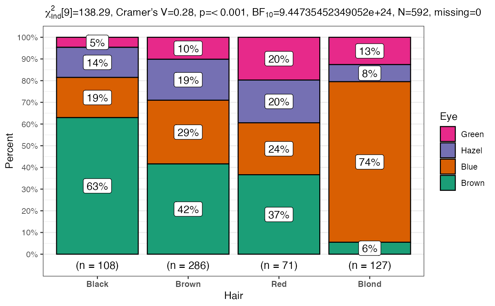

Bivariate bar charts for nominal and ordinal data with (optionally) statistical details included in the plot as a subtitle.
PlotXTabs2( data, x, y, counts = NULL, results.subtitle = TRUE, title = NULL, subtitle = NULL, caption = NULL, plottype = "percent", xlab = NULL, ylab = "Percent", legend.title = NULL, legend.position = "right", labels.legend = NULL, sample.size.label = TRUE, data.label = "percentage", label.text.size = 4, label.fill.color = "white", label.fill.alpha = 1, bar.outline.color = "black", x.axis.orientation = NULL, conf.level = 0.95, k = 2, perc.k = 0, mosaic.offset = 0.003, mosaic.alpha = 1, bf.details = FALSE, bf.display = "regular", sampling.plan = "jointMulti", fixed.margin = "rows", prior.concentration = 1, paired = FALSE, ggtheme = ggplot2::theme_bw(), package = "RColorBrewer", palette = "Dark2", direction = 1, ggplot.component = NULL )
Arguments
| data | A dataframe or tibble containing the `x` and `y` variables. |
|---|---|
| x | The variable to plot on the X axis of the chart. |
| y | The variable to segment the **columns** and test for independence. |
| counts | If the dataframe is based upon counts rather than individual rows for observations, `counts` must contain the name of variable that contains the counts. See `HairEyeColor` example. |
| results.subtitle | Decides whether the results of statistical tests are displayed as a subtitle (Default: TRUE). If set to FALSE, no subtitle. |
| title | The text for the plot title. |
| subtitle | The text for the plot subtitle. **N.B** if statistical results are requested through `results.subtitle = TRUE` the results will have precedence. |
| caption | The text for the plot caption. Please note the interaction with `bf.details`. |
| plottype | one of four options "side", "stack", "mosaic" or "percent" |
| xlab | Custom text for the `x` axis label (Default: `NULL`, which will cause the `x` axis label to be the `x` variable). |
| ylab | Custom text for the `y` axis label (Default: `"Percent"`). Set to `NULL` for no label. |
| legend.title | Title text for the legend. |
| legend.position | The position of the legend `"none"`, `"left"`, `"right"`, `"bottom"`, `"top"` (Default: `"right"`). |
| labels.legend | A character vector with custom labels for levels of the `y` variable displayed in the legend. |
| sample.size.label | Logical that decides whether sample size information should be displayed for each level of the grouping variable `y` (Default: `TRUE`). |
| data.label | Character decides what information needs to be displayed on the label in each bar segment. Possible options are `"percentage"` (default), `"counts"`, `"both"`. |
| label.text.size | Numeric that decides size for bar labels (Default: `4`). |
| label.fill.color | Character that specifies fill color for bar labels (Default: `white`). |
| label.fill.alpha | Numeric that specifies fill color transparency or `"alpha"` for bar labels (Default: `1` range `0` to `1`). |
| bar.outline.color | Character specifying color for bars (default: `"black"`). |
| x.axis.orientation | The orientation of the `x` axis labels one of "slant" or "vertical" to change from the default horizontal orientation (Default: `NULL` which is horizontal). |
| conf.level | Scalar between 0 and 1. If unspecified, the defaults return lower and upper confidence intervals (0.95). |
| k | Number of digits after decimal point (should be an integer) (Default: k = 2) for statistical results. |
| perc.k | Numeric that decides number of decimal places for percentage labels (Default: `0`). |
| mosaic.offset | Numeric that decides size of spacing between mosaic blocks (Default: `.003` which is very narrow). "reasonable" values probably lie between .05 and .001 |
| mosaic.alpha | Numeric that controls the "alpha" level of the mosaic plot blocks (Default: `1` which is essentially no "fading"). Values must be in the range 0 to 1 see: `ggplot2::aes_colour_fill_alpha` |
| bf.details | Logical that decides whether to display additional information from the Bayes Factor test in the caption (default:`FALSE`). This will take precedence over any text you enter as a `caption`. |
| bf.display | Character that determines how the Bayes factor value is is displayed. The default is simply the number rounded to `k`. Other options include "sensible", "log" and "support". |
| sampling.plan | the sampling plan (see details in ?contingencyTableBF). |
| fixed.margin | (see details in ?contingencyTableBF). |
| prior.concentration | (see details in ?contingencyTableBF). |
| paired | Not used yet. |
| ggtheme | A function, ggplot2 theme name. Default value is ggplot2::theme_bw(). Any of the ggplot2 themes, or themes from extension packages are allowed (e.g., hrbrthemes::theme_ipsum(), etc.). |
| package | Name of package from which the palette is desired as string or symbol. |
| palette | Name of palette as string or symbol. |
| direction | Either `1` or `-1`. If `-1` the palette will be reversed. |
| ggplot.component | A ggplot component to be added to the plot prepared by ggstatsplot. Default is NULL. The argument should be entered as a function. If the given function has an argument axes.range.restrict and if it has been set to TRUE, the added ggplot component might not work as expected. |
Author
Chuck Powell, Indrajeet Patil
Examples
# for reproducibility set.seed(123) # simplest possible call with the defaults PlotXTabs2( data = mtcars, y = vs, x = cyl )# more complex call PlotXTabs2( data = datasets::mtcars, y = vs, x = cyl, bf.details = TRUE, labels.legend = c("0 = V-shaped", "1 = straight"), legend.title = "Engine Style", legend.position = "right", title = "The perenial mtcars example", palette = "Pastel1" )if (FALSE) { # mosaic plot requires ggmosaic 0.2.2 or higher from github PlotXTabs2( data = mtcars, x = vs, y = am, plottype = "mosaic", data.label = "both", mosaic.alpha = .9, bf.display = "support", title = "Motorcars Mosaic Plot VS by AM" ) }